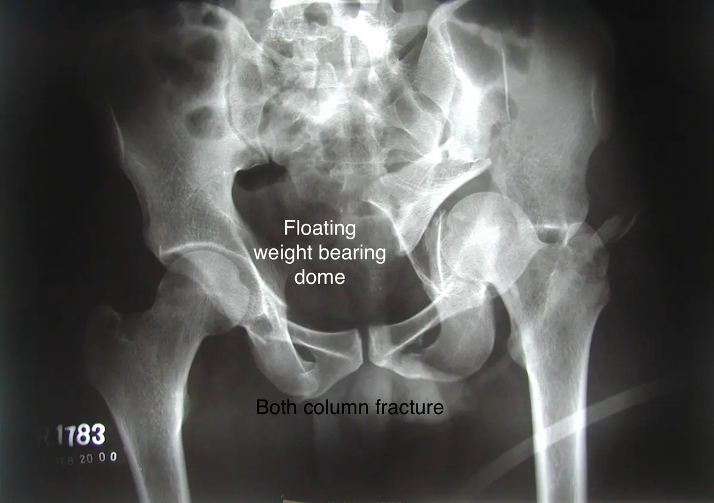

سطح الحُق
يشكل تجويف مفصل الورك، ويؤثر انتظام سطحه في توزيع الحمل.
الحُق هو التجويف الذي يستقبل رأس عظم الفخذ. كسره يصيب سطح مفصل الورك، ولذلك يركز العلاج على استعادة التوافق والثبات مع حماية الأنسجة والأعصاب، ثم تأهيل يراعي مقدار التحميل المسموح.



يشكل تجويف مفصل الورك، ويؤثر انتظام سطحه في توزيع الحمل.
قد تصاحبه إصابة غضروفية أو خلع مع بعض كسور الحُق.
الثبات والتوافق داخل المفصل مهمان؛ شكل الكسر وإزاحته يحددان الخيارات.
كسر الحُق يقع في تجويف المفصل، بينما كسور الحلقة الحوضية تتعلق بثبات الحلقة. قد يحدث النوعان معًا، ولكل منهما تقييم وخطة علاج.
قد يحدث بعد حادث قوي أو سقوط لدى مريض بعظم ضعيف. قد يصاحب الكسر خلع الورك أو إصابة رأس الفخذ، ما يؤثر في الأولوية والتخطيط.
ألم الورك والمغبن وعدم القدرة على التحميل شائعان. خلع الورك المرافق حالة عاجلة تتطلب ردًا بواسطة فريق مختص؛ ضعف القدم أو خدرها يستدعي تقييم الأعصاب.
تُقيّم الإصابات المصاحبة والدورة الدموية والأعصاب، مع تسجيل وظيفة القدم والإحساس. في إصابات الحوادث قد تكون الأولوية لإنقاذ الحياة قبل التثبيت النهائي.
تُستخدم الأشعة بوضعيات مناسبة والمقطعية لتحديد الجدران والأعمدة والإزاحة والأجزاء داخل المفصل. تساعد هذه التفاصيل على اختيار المدخل الجراحي أو العلاج التحفظي.
يُوازن القرار بين ثبات المفصل وتوافقه ومنطقة تحمل الوزن وحالة الغضروف والعظم وصحة المريض. العمر وحده لا يقرر الجراحة أو الاستبدال.
قد تناسب كسورًا مستقرة قليلة الإزاحة أو حالات تُرجّح فيها مخاطر الجراحة. تشمل حماية التحميل والمتابعة بالصور؛ لا تعني إهمال الكسر أو المشي دون قيود.
عند الحاجة يُعاد ترتيب الأجزاء وتثبت بشرائح ومسامير. تهدف الجراحة إلى سطح متوافق وثبات مناسب، لكن إصابة الغضروف قد تترك خطر خشونة لاحقة رغم تثبيت جيد.
قد يُناقش مبكرًا أو لاحقًا عند تلف مفصلي كبير أو عظم ضعيف أو خشونة مؤثرة. قد يحتاج تثبيتًا إضافيًا للحُق؛ القرار يتطلب تخطيطًا متخصصًا.
التأهيل يوازن بين حماية التثبيت وتقليل التيبس والجلطات والضعف.
تمارين الكاحل والتنفس وتغيير الوضعية وحركة الورك المسموح بها تبدأ وفق الخطة.
غالبًا يُقيد التحميل مدة يحددها نمط الكسر وثبات التثبيت والصور؛ لا توجد مدة واحدة للجميع.
تتدرج من التنشيط العضلي والمشي المساعد إلى القوة والتوازن والعودة للأنشطة.
المتابعة تربط الصور بالألم والحركة، وتبحث الخيارات إذا ظهرت أعراض مفصلية لاحقًا.
الجلطات، العدوى، إصابة العصب الوركي، التعظم غير المتجانس، فقدان الرد، خشونة المفصل أو نخر رأس الفخذ.
تعليمات التحميل تُفصّل حسب الكسر والتثبيت والصور. تُدرّب الحركة والقوة ضمن القيود، وقد يحتاج التعافي أشهرًا؛ لا تستخدم بروتوكول مريض آخر.
نراقب الالتئام والمشي والألم واحتمال الخشونة أو التعظم حول المفصل. الوقاية من الجلطات ومراقبة الجرح جزء من الرعاية بحسب عوامل الخطر.
الحُق سطح مفصلي يحمل الوزن؛ لذلك يهمنا تطابقه وثباته أكثر من مجرد وجود خط كسر.
الإزاحة داخل سطح المفصل قد تؤثر في تطابق الورك وتزيد خطر التنكس لاحقًا، لذلك يحتاج النمط إلى تحليل دقيق.
الأشعة المقطعية وإعادة البناء توضح الأعمدة والجدران واتجاه الإزاحة وتساعد في التخطيط الجراحي.
في حالات مختارة يكون فيها المفصل مستقرًا والتطابق مقبولًا ولا توجد مؤشرات للتثبيت، مع قيود تحميل ومتابعة.
عند عدم التطابق أو الإزاحة المؤثرة أو عدم الاستقرار، مع موازنة فائدة إعادة البناء مقابل مخاطر الجراحة وحالة المريض.
قد تشمل التيبس، الأذية العصبية أو الوعائية، عدم أو سوء الالتئام، والتنكس المفصلي لاحقًا، بحسب نمط الإصابة.
يُحدد حسب نمط الكسر وثبات التثبيت ونمو الالتئام في الصور؛ الزيادة التدريجية أهم من الاستعجال.
إجابات عملية تكمل الشرح، وتساعدك على مناقشة الخطة مع الطبيب.
كسر الحوض يصيب حلقة الحوض، بينما كسر الحُق يصيب تجويف مفصل الورك؛ وقد يجتمعان أحيانًا.
خلع الورك يحتاج ردًا عاجلًا، أما تثبيت الكسر فيُوقّت بعد استقرار المريض والتخطيط، وفق حالة الأنسجة والإصابات المصاحبة.
يحدد الجرّاح ذلك حسب النمط والتثبيت والصور. التحميل المبكر غير المصرح قد يهدد ثبات الرد.
ليس كل مريض. يزداد الاحتمال مع شدة تلف الغضروف وعدم التطابق والتهشم والعمر، لكن المتابعة هي التي تحدد الحاجة.
توضح تفاصيل السطح المفصلي والأجزاء المكسورة والإزاحة التي قد لا تظهر كاملة في الأشعة العادية.
لا؛ تقلل الإزاحة وتحسن التوافق، لكن الغضروف قد يكون تضرر وقت الإصابة.
نعم في بعض الحالات إذا تطورت خشونة مؤثرة، لكن الحاجة ليست حتمية.
بعد السماح بالتحميل والجلوس الآمن والتحكم الكافي بالطرف والتوقف عن الأدوية المهدئة، مع موافقة الفريق.
ليس تلقائيًا؛ بعض التمارين قد تخالف قيود الكسر أو العملية. اتبع البرنامج الخاص بإصابتك.
نعم، قد يشير إلى تأثر عصب ويحتاج توثيقًا ومتابعة. الضعف الجديد أو المتزايد يستلزم تقييمًا سريعًا.
كسر الحُق إصابة مفصلية معقدة؛ تحديد النمط والتطابق والثبات بالتصوير المقطعي خطوة أساسية قبل اختيار العلاج.
تختلف توصيات الإرشادات بحسب نوع الإصابة ونطاقها. الجرعات والقيود ومواعيد العودة تُفصّل بعد الفحص؛ تُذكر الفوائد المحتملة دون ضمان لنتيجة علاجية.
مصادر الرسوم وتراخيص استخدامها موثقة أسفل كل صورة. مجموعة Bioicons.